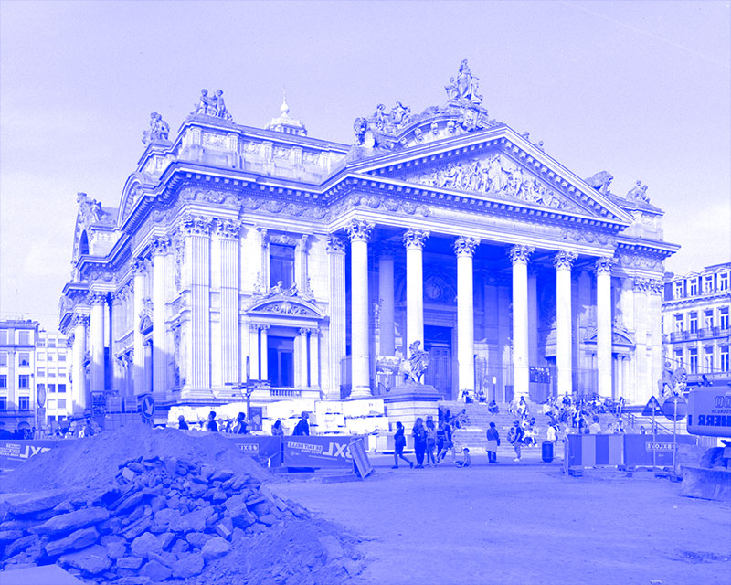
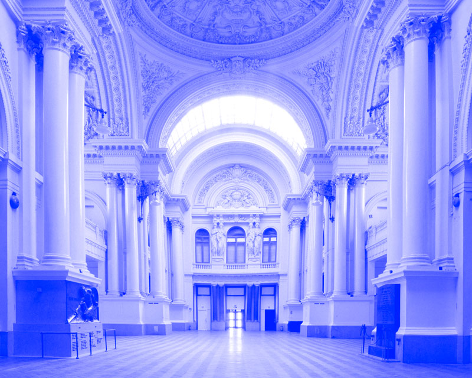

Mixing greatness and fantasy, the Brussels’ Bourse was erected on the Boulevard Anspach between 1868 and 1873 within the scope of the sanitation and beautification of the City, the vaulting of the Senne River and the creation of the main city centre’s boulevards.
Although the Bourse is a true emblem of the City of Brussels, the interior of the building remains unknown to many Brussels dwellers.


Through the scenography and artistic installations, Les Garages Numériques will play with the location’s codes and characteristics, thus underlining the many sumptuous architectural traits of the listed edifice, all the while respecting the building and its environment.